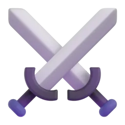
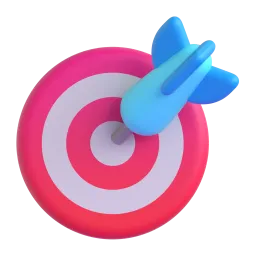

Вебкомпаньйон застосунку Thingual
Вивчай світ
по одному предмету
У застосунку ти йдеш шляхом коротких уроків від A1 до C2 разом із лисом Тінго — шістнадцятьма мовами, з серцями, скринями й серіями днів. Тут, на сайті, — той самий словник, тест рівня і план навчання. Без встановлення й реєстрації.
- слів на сайті
- 220
- мов
- 16
- тем
- 27
Слово дня
Одне слово на день — для всіх
Одне слово на день для всіх — з усіма шістнадцятьма мовами: обери ту, яку вчиш, і послухай вимову.
Як працює застосунок
Три хвилини на день із Тінго
-

1. Іди шляхом
100 юнітів і майже 500 уроків від A1 до C2: слова з картинками й звуком, пари, речення з плиток, відповідь голосом.
-
2. Грай із Тінго
Лис радіє правильним відповідям і спить, поки ти не вчився. Серця за помилки, скрині з кристалами, «Блискавка» на 60 секунд і гардероб для лиса.
-

3. Виходь на Арену
Дуелі слів 1 на 1 з людьми з усього світу, зграя лисів із родиною чи класом і голосові листівки з фразою дня. А щотижня весь світ разом веде Тінго новою країною.
Що можна зробити тут
Спробуй без встановлення

Словник
Пошук будь-якою з 16 мов, фільтри за темою та рівнем CEFR, вимова і переклади в одній картці.

Тренажер
Адаптивний тест рівня з 12 питань, картки за системою Лейтнера і калькулятор плану.

Про Thingual
Що вміє застосунок, як влаштований сайт, чесно про обмеження і відповіді на питання.
Камера, мапа світу і FSRS — у застосунку
Thingual працює в браузері, на iOS та Android. Відкрий вебверсію і пройди перший урок із Тінго — це три хвилини.